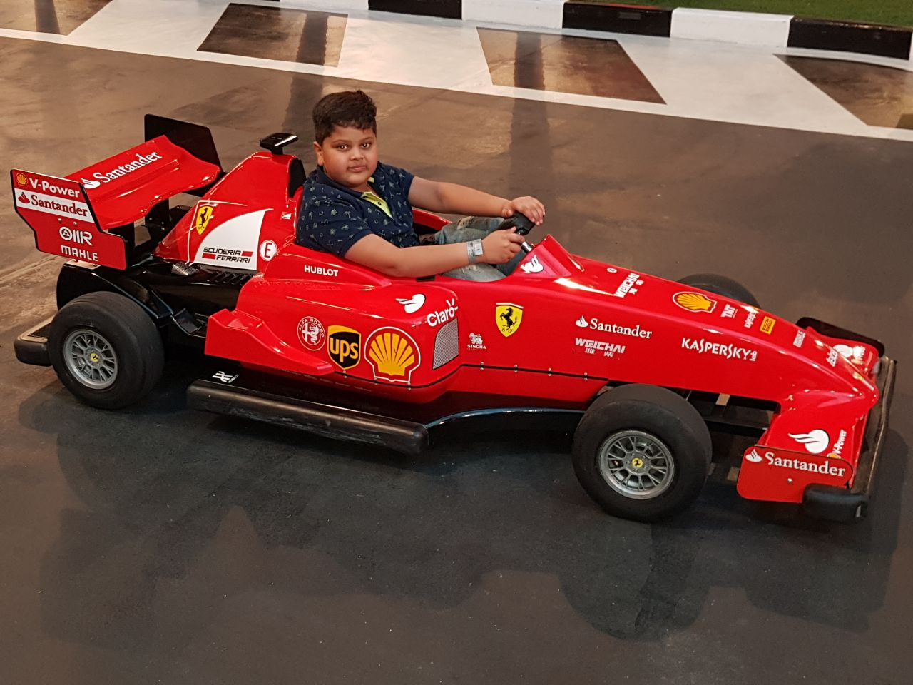

places must visit
Atlantice hotel,Dubai
i had visited in 2018
The hotel atlantice in Dubai is full of activites which we can do with our family. From water park to playing with a walrus, this plays literally has everything u desire. In this image you can see that we were getting instructions to how to be standing and behaving infront of a dolphin. We had to wear proper swimming suits to go into the water. You will definatly have a good time if u decide to go!
Review on the movies

This movie has great graphic production and plot - despite much criticism from the concept that we grew up believing in Venom as a Supervillain. Honestly, it's more Fanservice than Canonical - although it still follows some aspects of Canon. It deserves the applause of any other Marvel movie. The parasitic (bromantic) relationship between Eddie and his Symbiote is wonderful, hilarious, and appeals to audiences who love this kind of content. Fans must surely recognize that this film is one of the best fanserve mega-productions i n the movie industry. I certainly recognize and love it. ALSO, we must not fail to consider that there may be a new Venom, just as there may be a new Carnage, a Toxin, Hybrid, Anti -Venom, and so on, in future films. So we don't need to criticize this good work that achieved its purpose and ended up as it should we just have to hope that a new Venom appears and quenches our thirst for the evil, vengeful, selfish, killer and lunatic alien.
I'm so glad I kicked off my diwali on a dhamakedar 💥 note with #Sooryavanshi , great plot , action choreography especially in the climax is really great , lot of nicely choreographed shootout & combat sequences , the music too especially the thumping background music felt great to hear in the theater & #KatrinaKaif surprises in a really awesome attention grabbing , superbly & sensually performed dance moves in a really nice updated version of #TipTipBarsa Pani . The character , plot driven moments as well as the emotional & humorous moments are rea lly nice & nicely balanced . It also makes an attempt at tugging at your anti terrorism & reli gious sentiments & rightfully succeeds in that department . Entire supporting cast including @G ulshanGroverGG & others really make an impact with whatever screen time them . Nice 1st half even better 2nd half as the ATS are in a race against time to diffuse a bunch bombs . The presence of Singham & Simba in the climax is nic ely weaved & is a moneyshot moment that elevates the concluding portions of the movie . Singham's brief standalone moment in the climax is really nice which is a teaser to #Singham3 . This is @iamrohitshetty 's best movie yet I wonder how he'll top it off in the next installment of the universe looking forward to it 👍
top moments this year
-
2018, i went to Dubai for 20 days
When we went ot Dubai we did a lot of things one of them were going to ferrari world. We had a lot of fun their and we ate a lot of food and did many rides. Here i was driving a f1 for kids i had fun and i realy liked it. We also stayed at Atlantice which is seven star and we did lot of fun activity like water parks and all.